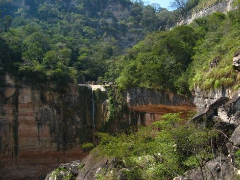

El Fuerte de Samaipata
El Fuerte de Samaipata o Fuerte de Samaypata es un sitio arqueológico en Bolivia, localizado a pocos kilómetros de la población de Samaipata en el departamento de Santa Cruz, a una altura de 1950 msnm.

El Jardín de la Delicias
El Jardín de las Delicias es el sitio recomendado. Acá no solo podrás disfrutar de las caídas de agua, sino que tendrás la oportunidad de realizar canopy y rapel, actividades extremas que se han puesto de moda.
El atractivo te brinda un paseo por un sendero en medio de la selva.
El valle de Tucavaca
Está ubicado a 430 kilómetros al este de la ciudad de Santa Cruz. De acuerdo con datos de la Gobernación cruceña, el Valle de Tucavaca es una de las reservas naturales más hermosas, tanto por la diversidad de flora y fauna, pero también porque le permite al turista la sensación de estar más cerca del cielo.
Laguna Verde
Es una laguna de Bolivia ubicada a 12 kilómetros al norte de la localidad de Comarapa en la provincia de Caballero en el departamento de Santa Cruz. Se encuentra a una altura de 2.419 msnm1 y tiene una superficie proximada de 2.000 m²,2 tiene una profundidad máxima de 8 metros
La ruta del Che
El recorrido que realizó Ernesto Che Guevara, en La Higuera, un pequeño pueblo cerca de Vallegrande.
Este paseo histórico rompe la cronología del tiempo., primero al llegar a Vallegrande se puede visitar, donde el cuerpo sin vida del Che fue expuesto a la prensa internacional.
Aguas Calientes, Roboré
El río Aguas Calientes, en el Municipio de Roboré, se convierte en el río de aguas termales más extenso de Latinoamérica, con 5 km de largo.
es el sitio con agua más caliente, entre 41º y 45 º C, el sitio más interesante está formado por los brotes de agua o hervores, donde literalmente el agua está hirviendo.
Majao
Elaborado con charque de res (carne seca), arroz y urucu (pimentón), acompañado de huevo estrellado y plátano frito.

Locro
Se trata de una especie de sopa, compuesta de arroz, charque y colorante. Esta clase de plato puede ser preparado de dos formas: el locro carretero que fue descrito anteriormente y el locro de gallina, que consiste en sustituir el charque con carne de gallina

El zonzo
Este plato se prepara a base de yuca y queso o charque desmenuzado un plato muy exquisito y tradicional del oriente boliviano (Santa Cruz, Beni, Pando), el cual cada vez esta siendo cada vez mas degustado por muchos.

Pacumutu
Los ingredientes son carne filete, tomate, cebollas medianas, pimiento morrón rojo, jugo de limón, salsa de soya, aceite y sal.
Pan de arroz
Elaborado con arroz, harina de yuca, manteca, queso blanco rayado, azúcar cuajada y hojas de plátano.

Cuñape
El cuñapé es un panecillo hecho a base de queso y almidón de yuca. Es tradicional de la región del Oriente de Bolivia. Es de tamaño pequeño y suele acompañar cualquier comida o ser consumido solo.